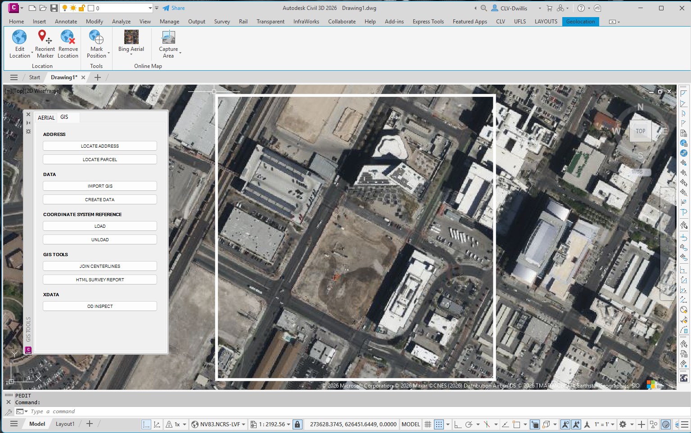
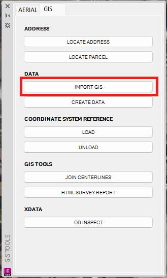
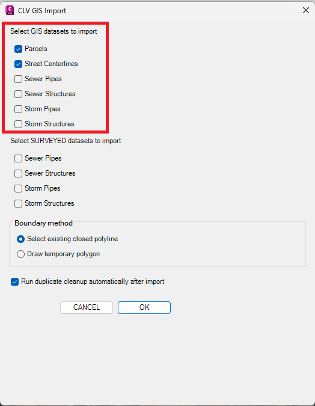
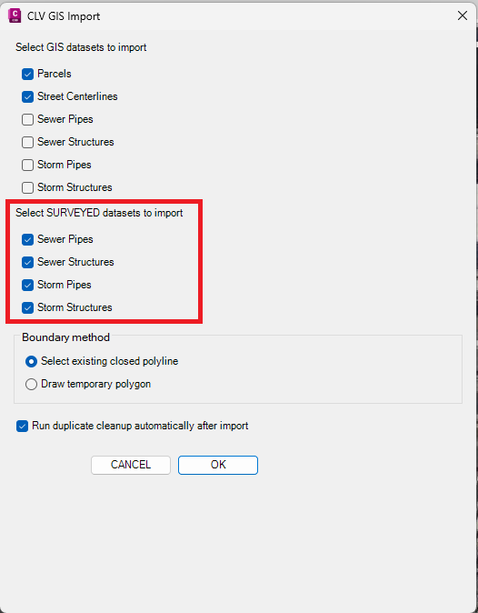
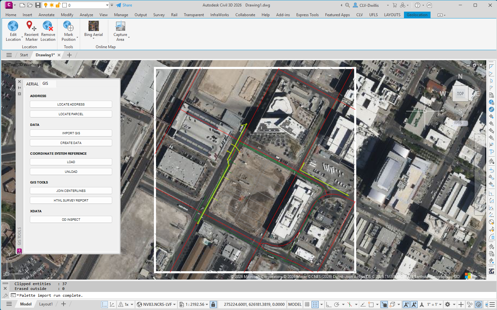
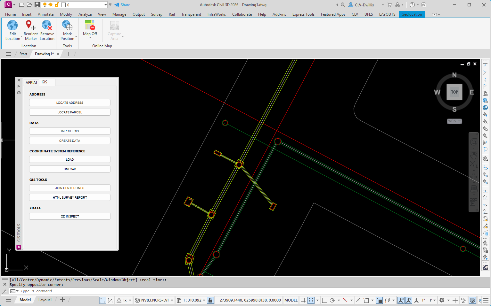
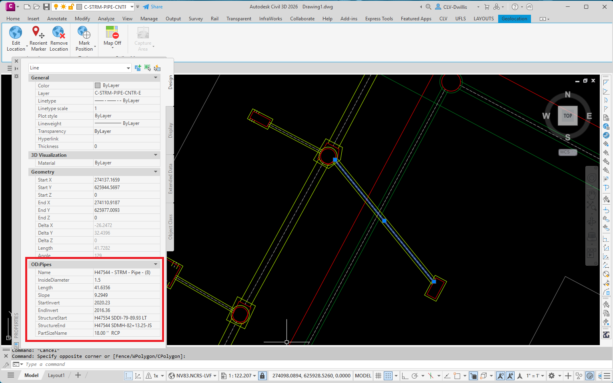

IMPORT GIS
Imports selected GIS or Surveyed utility data inside a defined project area. Use this tool when you need parcel, street centerline, storm drain, or sewer reference data in the active drawing.
Result: The selected data layers are imported within the chosen boundary area and placed into the drawing for review or use as reference linework.
Basic Use
- Open the GIS tab and review the area where data needs to be imported.
- Select IMPORT GIS under the DATA section.
- Select the needed GIS datasets. These are general reference datasets, such as parcels, street centerlines, sewer, and storm drain data.
- Select SURVEYED datasets only when UFLS-reviewed storm drain or sewer data is needed for the area.
- Choose the boundary method, leave duplicate cleanup checked unless a manual review is needed, then click OK.
- Review the imported Surveyed utility information. Surveyed datasets provide survey-accurate utility linework and structure information, not only the generalized single lines and points typically found in county GIS data.
- Select imported Surveyed linework as needed and review the attached Object Data. The linework contains survey-accurate Object Data such as pipe size, length, slope, invert data, and connected structures where available.







Dataset Guidance
- GIS datasets are general citywide reference data. They are useful for planning, review, and context, but should not be treated as surveyed-level accuracy.
- Surveyed datasets are based on UFLS-reviewed information and are expected to be more accurate than the general GIS datasets where available.
- Surveyed datasets are currently limited to storm drain and sewer data.
- Surveyed dataset coverage is limited. Available areas are updated as newer UFLS reviews are completed and added to the cache.
- If surveyed data is needed for an area that is not currently available, users may request that the area be reviewed and added when workload and source data allow.
Notes
- Import only the datasets needed for the task. Selecting unnecessary datasets can clutter the drawing and increase processing time.
- Use a reasonably tight boundary around the project area whenever possible.
- After importing, visually compare the data against aerial imagery, surveyed linework, or project records before relying on it for design or review decisions.